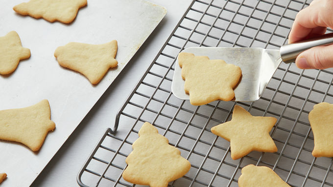
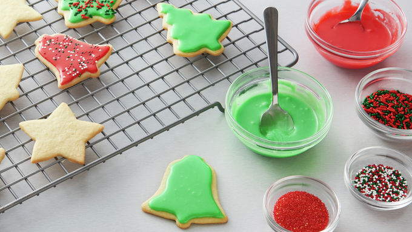

Betty Crockers Classic Sugar Cookies
Ingredients
- 1 1/2 cups powdered sugar
- 1 cup butter, softened
- 1 teaspoon vanilla
- 1/2 teaspoon almond extract
- 1 egg
- 2 1/2 cups all-purpose flour
- 1 teaspoon baking soda
- 1 teaspoon cream of tartar
- 3 cups powdered sugar
- 3-5 tablespoons milk
- 1/4 teaspoon vanilla
- In a large bowl, beat1 1/2 cups powdered sugar, the softened butter, 1 teaspoon vanilla, the almond extract and egg with electric mixer on medium speed, or mix with spoon, until well blended. Stir in flour, baking soda and cream of tartar. Divide dough in half; shape dough into 2 disks, and wrap in plastic wrap. Cover and refigreate at least 2 hours.
- Heat oven to 375 degrees
- Roll each disk on lightly floured surface until 1/4 inch thick. Cut with 2-2 1/2 inch cookie cutters in to desired shapes on an ungreased cookie sheets, place cutouts at least 2 inches apart
- Bake 7 to 9 minutes or until edges are light brown. Cool 1 minute; remove from cookie sheets to cooling racks. Cool completely!!! 
- In a medium bowl, beat 3 cups powdered sugar, 3 tablespoons milk and 1/4 teaspoon vanilla with spoon until smooth and spreadable. If frosting is too stiff to spread, add additional milk 1 teaspoon at a time. Tint withfood color. sprad frosting on cooled cookies. Decorae as dsired with colored sugar or candy sprinkles. Let stand about 4 hour oruntil frosting is set. Store covered in airtight container at room temperature with waxed paper between layers. 
Cookies:
Frosting:
Food colors if desired
Colored surgar or candy sprinkles if
Steps: